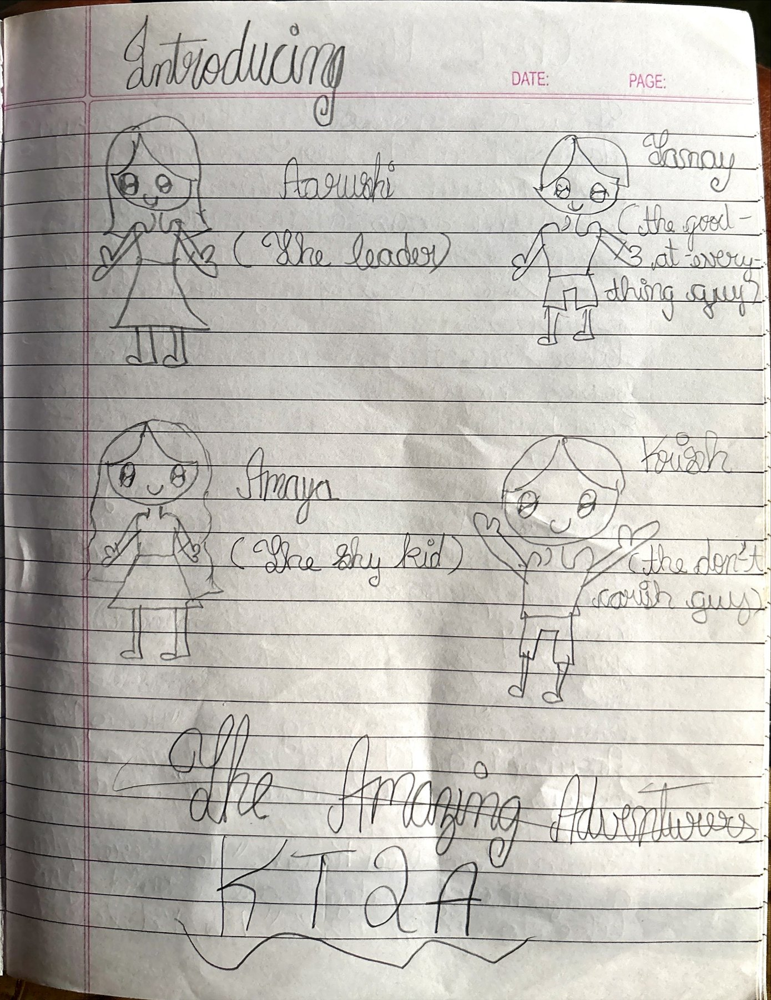
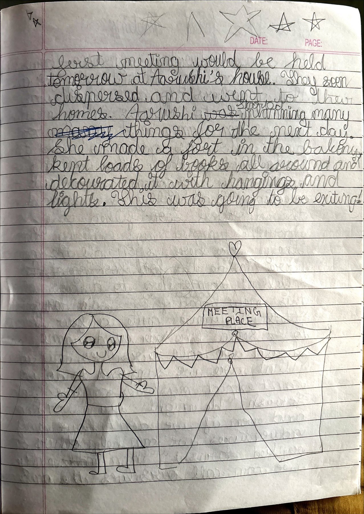

Moving InThe Amazing Adventurers · KT2A
From Anshika’s handwritten notebooks (Moving in.pdf). A Secret Seven–style friendship story — Chapters 1 & 2 as she wrote them, ending where her pencil left the gang hunting for their first adventure.
Aarushi moves into a new flat and longs for a gang like the Secret Seven. On the playground she finds Krish, Tanay and shy Amaya — and together they become the Amazing Adventurers.
The Amazing Adventurers
KT2A
KT2A = Krish, Tanay, and the 2 As (Amaya & Aarushi).
Chapters
Moving In
It was a lovely Friday evening. Aarushi and her parents had just moved into their new flat.
Aarushi was a normal kid who longed for a big adventure of some sort. She was hoping to find other kids to make a gang with — like the Secret Seven. She loved reading books, especially ones written by Enid Blyton. She sat in her new room thinking of exciting things she could do with a gang. This made her long for a gang even more, and she decided to go down to the playground to find more people willing to join.
To her immense joy, she found a lot of kids playing. As she looked around, she saw two boys approaching her.
“Hello, I’m Aarushi and I just moved in a few days ago. Who are you?” said Aarushi.
“I’m Krish and that is my brother Tanay,” replied Krish. “We were playing a game of dodgeball — would you like to join us?”
“Yes, I’d love to,” said Aarushi.
As they played, she got to know quite a few things about them. Krish was ten years old and loved playing, cycling and crafting. He was a nice person to talk to, but very careless. He never cared about how dirty his room was, or even if someone felt hurt about something he said.
Tanay was his twin brother and looked identical to Krish. He was good at pretty much everything and often boasted about all the great things he did. Aarushi rather liked both of them and ignored their weaknesses, knowing that she too could be very impatient and had quite a temper at times.
When she told them about her ideas of a gang, they both immediately asked her if they could belong. She was quite happy about this, but had made up her mind to ask a girl to join them too.
They were in the middle of the game when Aarushi spotted a girl sitting shyly in a corner.
“Let’s ask her to join in,” she said. “A gang would be no fun with only three members.”
“Okay,” said the twins.
So the three of them approached her.
“Hello, I’m Aarushi and they are Krish and Tanay. Who are you?” asked Aarushi.
“Um… hi… I’m Amaya. Nice to meet you,” replied Amaya shyly.
“We were playing dodgeball — would you like to join us?” said Tanay.
“Um… almost sure, hehe,” replied Amaya. “I’ve never been asked to play before because I’m very shy.”
Aarushi rather liked Amaya. She was very friendly once you got through her shy side. Tanay also liked her, but Krish thought she was quite a baby.
As they played, Aarushi told her about the gang and asked her to join them. Amaya was hesitant at first, but agreed as excitement had overthrown her shyness.
They decided that the first meeting would be held tomorrow at Aarushi’s house. They soon dispersed and went to their homes.
Aarushi started planning many things for the next day. She made a fort in the balcony, kept loads of books all around, and decorated it with hangings and lights.
This was going to be exciting!

The First Meeting
It was Saturday afternoon. Aarushi was waiting impatiently for all the members to come. There was so much to discuss. They needed a group name and a password — and who was going to make the badges? Were they even coming, or had they forgotten all about the meeting?
Thankfully the sound of the doorbell soon filled the house. Aarushi jumped up excitedly. Finally they were here. Soon all the members were inside the fort.
“Well, I called you all here to discuss this new band of ours,” said Aarushi. “We have quite a few things to settle, like our band name. What should we call ourselves? Any ideas?”
“What are we supposed to do? We can’t expect mysteries, can we?” said Krish.
“We might — you never know. And even if we don’t have any adventures, we can help others out,” replied Aarushi. “Then maybe we can call ourselves the Amazing…”
“…Adventurers — KT2A, since our names start with K, T, and two A’s,” said Amaya. “I rather like how it sounds.”
“That’s a nice name. I like it. What do you boys think?” said Aarushi.
“I like it too,” said Tanay.
“I suppose it’s all right,” Krish said.
“Well then, it’s settled. If we don’t have any adventures we can always change the name,” said Aarushi. “Now — what about a password?”
“How about diddly-dudly-doo?” said Krish.
“Silly! Who says a gang’s password that?” said Tanay. “If it was I who was choosing the password, I would choose the best one in the world.”
“Boaster — tell us your password then, and we’ll see how good it is,” replied Krish.
“I think the password should be butterfly,” said Tanay.
“That doesn’t make any sense,” said Aarushi.
“It does. Butterflies have four wings and we are four people, and butterflies are rather adventurous. They fly from flower to flower as though they are looking for an adventure,” replied Tanay.
“Oh yes — well, I think that should be our password for now,” said Aarushi.
Everyone agreed to keep the password butterfly.
“Now I thought it would be fun to make our own adventure badges,” said Aarushi.
“Yes, let’s!” replied the others.
They spent the rest of the meeting making badges and talking about the grand adventures they were going to have.
Over the next few days, all the members started to look for something to do. But to their disappointment, they were left empty-handed.
To be continued…
From Anshika’s manuscript Moving in.pdf. Spelling and punctuation lightly polished; dialogue and character beats kept from her draft (including Krish’s “diddly-dudly-doo,” Tanay’s butterfly password, and the open ending where KT2A still waits for their first real adventure).